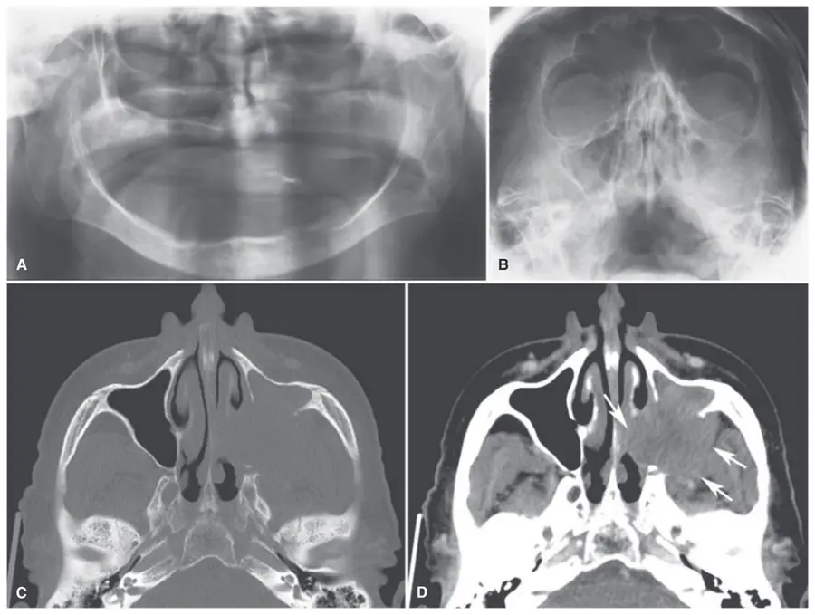

نسخه استخراجشده؛ ترجمه یا تأیید علمی انجام نشده است. وضعیت: captured
یک جمله که کل رویکرد تو به سینوس اوپک را تعیین میکند: «هرچند اوپسیفیکیشن سینوس ویژگی هم وضعیتهای التهابی و هم نئوپلاسمها است، تخریب استخوان با نئوپلاسمهای بدخیم شایعتر است.» و صریحتر: «هر نشانهای از فرسایش یا تخریب استخوان در سینوسهای پارانازال باید بهطور کامل بررسی شود.»

نئوپلاسمهای خوشخیم سینوسها نادرند و ویژگیهای تصویریشان غیراختصاصی است. دو مورد شاخص:
و بدخیمیها — با اعدادی که باید بدانی: نئوپلاسمهای بدخیم سینوسهای پارانازال «کمتر از ۱٪ همهی بدخیمیهای بدن» را میسازند. کارسینوم سلول سنگفرشی ۸۰ تا ۹۰٪ سرطانهای این ناحیه است. و «از همهی کارسینومهایی که در سینوسهای پارانازال آغاز میشوند، ۷۴٪ در سینوس ماگزیلاری برمیخیزند».
و کارسینوم سلول سنگفرشی: میانگین سنی ۶۰ سال (دامنه ۲۵ تا ۸۹)، دو برابر در مردان، درگیری غدد لنفاوی در حدود ۱۰٪، و علائم بهطور متوسط ۵ ماه پیش از تشخیص حضور دارند.
و بهترین بخش این بحث: علائم را دیواره تعیین میکند. «علائمی که نئوپلاسم بدخیم در سینوس ماگزیلاری میسازد به این بستگی دارد که کدام دیواره درگیر شده است.»
و یک قاعدهی بالینی که باید مثل یک زنگ خطر عمل کند: «باید در هر بیمار مسنی که برای نخستین بار و بدون علت آشکار دچار رینوسینوزیت مزمن میشود، به نئوپلاسم مشکوک شد.»
و اثر بر دندانها و استخوان: بررسی دقیق زائدهی آلوئولار میتواند تخریب استخوان دور دندانها را آشکار کند، و پهن شدن نامنظم فضای لیگامان پریودنتال و از دست رفتن لامینا دورا. و «اگر تصویربرداری تخت از هر سینوس اوپک کمترین نشانهای از تخریب استخوان نشان دهد، تصویربرداری پیشرفته ضروری است».
و سودوتومور: اصطلاحی عمومی برای هر ضایعهی التهابی مزمن گسترشیابندهی غیراختصاصی که بالینی و رادیوگرافیک نئوپلاسم را شبیهسازی میکند. اغلب پس از مجموعهای از عفونتهای مکرر رخ میدهد، میتواند فرسایش دیوارهها و پروپتوز بسازد، و بسیاری از بیماران ایمنیسرکوبشده یا مبتلا به بیماریهای سیستمیک مانند دیابت، بیماری فونویلبراند یا میلودیسپلازیاند.
سینوسهای پارانازال چهار جفت حفرهی پرهوا هستند: ماگزیلاری، فرونتال، اسفنوئید، و سلولهای هوایی اتموئید. همگی بهصورت فرورفتگی از حفرههای بینی به درون استخوانهای مربوطه رشد میکنند و تا بلوغ اسکلتی بزرگ میشوند. پوششان مخاط تنفسی با اپیتلیوم استوانهای مطبق کاذب مژهدار است، و مژهها ترشحات را از راه اُستیوم به حفرههای بینی میرانند.
و جدول زمانی رشد را با هم بسنج:
و چهار عدد تنوع طبیعی: هیپوپلازی سینوس ماگزیلاری یکطرفه در حدود ۱٫۷٪ و دوطرفه در ۷٫۲٪ بیماران، در حدود ۴٪ جمعیت سینوسهای فرونتال اصلاً رشد نمیکنند.
و یک اشتباه تصویری رایج در هیپوپلازی: «در تصویربرداری تخت، سینوس درگیر ممکن است بهدلیل مقدار نسبتاً زیاد استخوان ماگزیلای اطراف، رادیواوپکتر از طبیعی به نظر برسد.» و راه بیرون آمدن: «پیکربندی دیوارههای سینوس اغلب به تفکیک سینوس هیپوپلاستیک از سینوسی که پاتولوژیک رادیواوپک است کمک میکند.»
و سندرم سینوس خاموش (SSS): موجودیتی نادر که تصور میشود از هیپوونتیلاسیون سینوس بر اثر انسداد اُستیوم ناشی میشود و سرانجام به کاهش حجم سینوس میانجامد. بالینی با انوفتالموس و هیپوگلوبوس همراه است، و رادیوگرافیک با کاهش اندازهی سینوس، خمیدگی دیوارهها، و کف اوربیت جابهجاشده به پایین با افزایش محتوای اوربیت. پس عدم تقارن اندازهی دو سینوس، هم میتواند هیپوپلازی باشد و هم SSS.
و چند نکتهی آناتومیک که در تفسیر به کارت میآیند: سینوسهای فرونتال راست و چپ مستقل رشد میکنند و در خط وسط به هم نزدیک میشوند، و یک سپتوم استخوانی نازک میتواند دو حفرهی نامتقارن را جزئی یا کامل جدا کند؛ در بزرگسالان پنوماتیزاسیون فرونتال میتواند به سقف اوربیت هم امتداد یابد، اُستیوم سینوس اسفنوئید قطر نسبتاً بزرگی دارد، و همین میتواند توضیح دهد چرا انسداد آن غیرشایع است، و سلولهای اتموئیدی که زیر اوربیت رشد میکنند سلولهای هالر یا سلولهای اتموئید اینفرااوربیتال نامیده میشوند.
و کارکرد سینوسها، که هنوز محل بحث است: عایقبندی و محافظت ساختارهای حیاتی عمقی در برابر تروما، مرطوب و گرم کردن هوای دمی، سبک کردن وزن استخوانهای جمجمه، و تازهترین یافته: نقش اپیتلیوم سینوسها در تولید نیتریک اکساید (•NO) راه هوایی فوقانی، که «میتواند هم اثر ضدمیکروبی موضعی داشته باشد و هم نقش پاییندستی اتساع عروق ریوی و بهبود تبادل اکسیژن خون».
سؤالهای این مرور سختترند و بسیاری از آنها یک یافتهی تصویری میدهند — کورتکس، شکل، توزیع یا مرکز ضخیمشدگی — و میپرسند کدام تشخیص را میسازد.